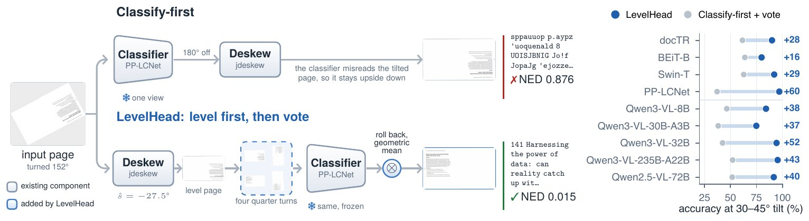

Deskew before you classify

TL;DR Pipelines pick a page's quarter turn first and remove its tilt second, so the classifier sees pages unlike any it was trained on. LevelHead swaps the order: level the page, then let any frozen model vote over the four quarter turns of the level page. No training.
Method

Results
| Backbones | Classify-first | LevelHead | |
|---|---|---|---|
| 4 classifiers, pages at any angle | 71.9 | 85.2 | +13.3 |
| 4 Qwen3-VL models, 7 benchmarks | 41.9 | 84.6 | +42.7 |
| GPT-4o-mini, 7 benchmarks | 34.3 | 69.9 | +35.6 |
| Gemma-4-31B, 7 benchmarks | 62.0 | 94.5 | +32.5 |
| 4 classifiers, phone photos at any angle | 69.3 | 89.8 | +20.5 |
| 4 classifiers, DISE scans at any angle | 65.0 | 91.3 | +26.3 |

A deskewer that reads photographs

Examples
Phone photos
Screen and oblique photographs from Real5, turned by known angles.
Scans
DISE 2021 test scans with known skew, in all four quarter turns.
Seven benchmarks
ORB, ODB-4 and ODB-any: receipts, Indic scripts, documents on photos.

BibTeX
@misc{levelhead2026,
title = {Deskew Before You Classify: Training-Free Page Orientation for Any Model},
author = {Anonymous},
year = {2026},
note = {Under review}
}
Turn a page
Page and its level version
Page as given
After Step 1: level, a quarter turn off
Accuracy against tilt
ODB-any (1,651 pages). Both orders use the same deskewer and the same four-view vote.
Every backbone
| Backbone | Classify-first | LevelHead | Status |
|---|
Average accuracy (%) over seven public benchmarks. Models near chance (25%) even on level pages cannot be helped by any wrapper.